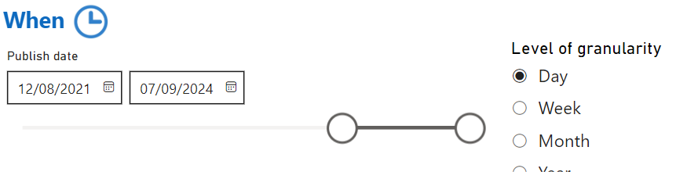

When: Date Filters and Granularity

The When section in the Trender system allows users to filter news articles based on the time they were published. This filter is essential for narrowing down news content based on time frames, allowing for trends and patterns to be analyzed effectively.
Date Filters
1. Publish Date
The Publish Date filter lets users specify a date range for the news articles they want to analyze. Articles outside the selected date range will be excluded from the results.
How to use:
- Select a start and end date from the date picker.
- The system will return all articles published within the specified range.
Example:
If you want to see articles from January 1, 2024, to January 31, 2024, set the date range accordingly, and the results will reflect only that period.
Level of Granularity
2. Aggregation by Time Period
Users can select the level of granularity for displaying results. This feature is helpful when you want to see the number of articles or trends over specific time intervals.
Available options:
- Daily: Display data aggregated by each day.
- Weekly: Group and display data by week.
- Monthly: Aggregate and show data by month.
- Yearly: Show data grouped by year.
How to use:
- Select the granularity level you wish to apply. For example, if you choose "Monthly," Trender will group and display the data for each month within the selected date range.
- This feature is especially useful for identifying trends, spikes, or fluctuations over time.
Examples
- Analyze news articles for a specific week:
- Set the date range to "March 1, 2024 - March 7, 2024".
-
Choose Daily granularity to see the number of articles published each day during that week.
-
View long-term trends:
- Set the date range to "January 2023 - December 2023".
- Select Monthly granularity to observe how the volume of articles changed month by month.
Advanced Features
-
Dynamic Range: Trender allows for dynamic date ranges such as "Last 7 days", "Last 30 days", or "Year to date", providing a flexible approach to analysis without manually selecting dates.
-
Custom Granularity: For more advanced users, Trender supports custom granularity options (e.g., quarterly), allowing for even more fine-tuned analysis of data over time.
Use Cases
Tracking the Volume of News on a Specific Topic Over Time
If you want to track how often a particular subject or event has been mentioned in the news, you can set a time range and choose the level of granularity. For example, you can compare how political news spiked around election time versus other periods.
Analyzing Crisis Developments
By filtering news based on a precise time window and adjusting the granularity to daily or weekly, you can monitor how a crisis unfolded, including key moments or sudden changes in sentiment.